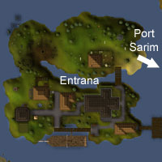

")
Entrana (Members)
Introduction | Location | Points of Interest | Personalities | Quests
Inhabitants of Entrana | Miscellaneous
Inhabitants of Entrana | Miscellaneous
Introduction

Location

Entrana itself is to the north of Crandor and just off the west coast of Falador. To the north is Catherby, and Ardougne is to the west, though neither are reachable via Entrana.
Entrana can be accessed through The Abyss, though you will have to bank all armour and weapons before doing so.
Points of Interest
Entrana is an essential stop for glass-blowing amateurs and connoisseurs, with all of the required elements dotted around the island.

There is an altar in the cathedral for restoring your Prayer points.
An entrance to the Law Altar lies to the north of the river, accessible with a law talisman.
There is a variety of Fishing opportunities on the island, particularly in the river bisecting the island. Pike, salmon, trout and shrimps are amongst the watery beasties that can be fished from Entrana. The two ranges on Entrana make the island an attractive one for anglers looking to raise their stats.
Those looking to recover their lost Dramen Staff will know what to do in the north-west corner of the island.
Personalities
![[image]](../../img/main/kbase/npc/area_guides/chathead/high_priest.gif) The High Priest may be the most senior of the Entranan monks, have one of the biggest churches on Runescape and be, quite literally, near the centre of the Runescape universe (or at least the map}, but he is still one of the most pious and humble of them all.
|
![[image]](../../img/main/kbase/npc/area_guides/chathead/auguste.gif) On the peaceful island of Entrana a lone monk has tired of his life of simplicity and quiet reflection. Auguste wants to boldly write his name in the history books; to craftily defeat the laws of physics; to miraculously sail through the air... preferably not to horribly explode into a ball of flaming death.
|
|
| The High Priest can be found pacing around the large church on Entrana. | Auguste can be found wandering near his platform on the western side of the island. |
![[image]](../../img/main/kbase/npc/area_guides/chathead/cave_monk.gif) Imagine a meeting of newly ordained monks, each being assigned their tasks on the island. Mazion gets there early and takes the general 'wandering' job, Frincos snags the general store position and Francis plumps for the green-fingered type. One monk, however, had a hard night on the monastery wine, and is left with the juicy cave-guarding job. On his own. Strong stuff, that monastery wine.
|
| The Cave Monk guards the entrance to - you guessed it, you astute people - the cave in the north-west corner. |
Quests
The following quest can be started on Entrana:
An Enlightened Journey (Members)
Inhabitants of Entrana
![[image]](../../img/main/kbase/npc/area_guides/monk.gif) These peace-loving disciples of Saradomin are unlikely to take a swing at you with a smuggled mace and would much rather spend a night at the altar than entreat you to an arm-wrestling tournament. They will defend themselves against attacks from heathens, however, and will do so with predictable ineptitude.
|
![[image]](../../img/main/kbase/npc/area_guides/unicorn.gif) For a while considered extinct in Runescape but now flourishing in pockets around the globe, the unicorn is still hankered after for its horn. When crushed into a powder it has medicinal purposes, and is an invaluable ingredient in two RuneScape remedies.
|
|
| The monks can be found in the church. | Unicorns can be found on the north half of Entrana. |
![[image]](../../img/main/kbase/npc/area_guides/bear.gif) Solitary omnivores that will attack if provoked or hungry, the bear can be a fearsome opponent to low-level players. The bears of Entrana are largely passive, however, and will generally leave you alone unless a black bear bloodlust comes over you.
|
| A bear can be found on the north-west corner of the island. |
Miscellaneous
- Those trusting monks love to leave their personal effects willy-nilly around the island. There is a Fishing rod in a kitchen to the south-east of the island and a kebab left invitingly on a range.
- Two planks have washed up on the north coast of the island.
- Frincos is perfectly happy for you to 'sample' the vials on the counter of his general store.
- Those adventurers bold enough to meekly go where no man has gone before with Auguste will be able to use his fabulous balloon transport system.
- The Entrana firebird scouts the northern coast, blissfully unaware of those heroes who covet it for its plumage.

More articles in
Other
|
|